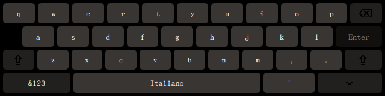
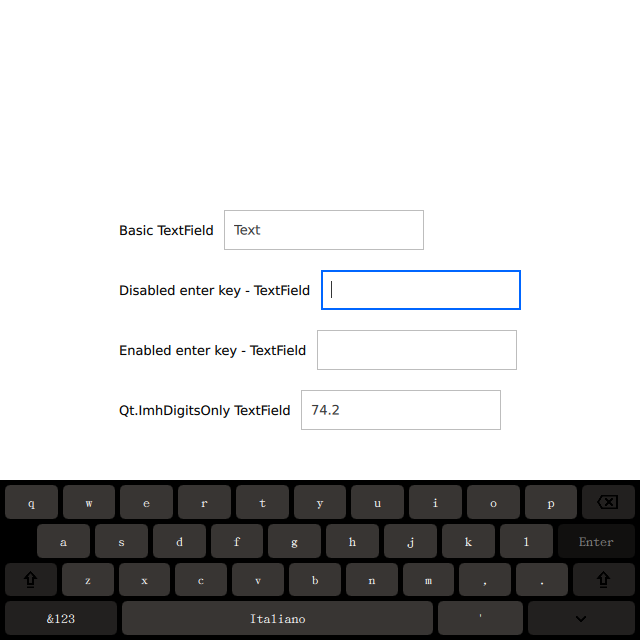

CuteKeyboard
A future proof, customizable Qt/QML virtual keyboard for embedded applications.
Qt 5 and Qt 622 languagesMIT licensed

Enter a new age of virtual keyboards
Stop worrying about a limited keyboard offering a sub-par, phone-like experience. CuteKeyboard slides in when a field takes focus, adapts to the field's input hints and gets out of the way when you are done.
Watch it in action ›
Why CuteKeyboard?
Every feature a complete virtual keyboard needs for your product, and nothing to pay for.
Customizable
Colors, font and icons are plain InputPanel properties, and every key is a QML
file you can restyle — no Photoshop required.
Localization
22 built-in layouts, from English, Italiano and Deutsch to Ελληνικός, Русский and Қазақша, switchable at runtime with the language key.
Long-Press Alternatives
Accented characters in a press-and-hold popup, a symbol page and a digits-only layout
driven by inputMethodHints.
Drop-In Plugin
A standard Qt input context: set QT_IM_MODULE, add one QML item. Builds with
qmake or CMake, on Qt 5 and Qt 6.
Free to Use
Sponsored by Amarula Solutions and free to download and use for any purpose.
Open Source
MIT licensed, so you can ship it in commercial products.
Get Started
Three steps from clone to a keyboard in your window.
-
Build and install the plugin
Clone the repository, then use the build system your Qt project already uses.
qmake (Qt 5 and Qt 6)
mkdir build && cd build qmake .. make -j4 make installCMake (Qt 6)
cmake -S . -B build cmake --build build cmake --install build -
Select it as input method
In
main.cpp, before the application object is created.qputenv("QT_IM_MODULE", QByteArray("cutekeyboard")); -
Add the panel to your window
In
main.qml, parked below the window and slid in while an input field has focus.import QtQuick.CuteKeyboard 1.0 InputPanel { id: inputPanel z: 99 y: window.height anchors.left: parent.left anchors.right: parent.right languageLayout: "En" availableLanguageLayouts: ["En", "It", "De"] states: State { name: "visible" when: Qt.inputMethod.visible PropertyChanges { target: inputPanel y: window.height - inputPanel.height } } }